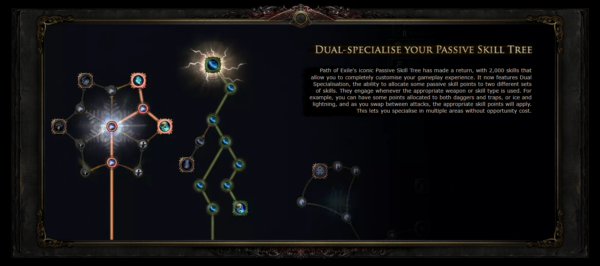

Path of Exile 2
Path of Exile 2 é um RPG de ação de próxima geração criado pela Grinding Gear Games.
Passado anos após o Path of Exile original, você retornará ao mundo sombrio de Wraeclast e tentará acabar com a corrupção que está se espalhando. O jogo apresenta uma nova campanha com seis atos, 100 ambientes distintos, 600 monstros e 100 chefes.
12 Classes de Personagens
No Path of Exile 2, existem doze classes base, com duas classes representando cada combinação de Atributos. (Força, Destreza, Inteligência, Força/Destreza, etc).
A Árvore Passiva no Path of Exile terá 6 locais iniciais, com cada combinação de Atributos tendo sua própria posição inicial na árvore. (Por exemplo, Marauder e Warrior começarão no mesmo local na árvore)
O Scion foi a 7ª classe introduzida no PoE 1 que começou no centro da árvore. O Scion não poderá ser jogado no PoE 2.
Cada uma das doze classes de personagem tem suas próprias três especializações de Ascensão, resultando em um total de 36 Classes de Ascensão para escolher.
Aqui está uma lista das classes no PoE 2 e suas armas/habilidades características.
- Força: Saqueador - Machados
- Força: Guerreiro - Maças
- Destreza: Ranger - Arcos
- Destreza: Caçadora - Lanças
- Inteligência: Bruxa - Lacaios/Feitiços Ocultos
- Inteligência: Feiticeira - Feitiços Elementais
- Str/Dex: Duelista - Espadas
- Str/Dex: Mercenário - Bestas
- Int/Dex: Shadow - Adagas e Armadilhas
- Int/Dex: Monge - Desarmado e Bastões
- Str/Int: Templário - Manguais
- Str/Int: Druida - Feitiços de Mudança de Forma
Sistema de Habilidades Customizado
Qualquer classe pode usar qualquer Gema de Habilidade, e tais Gemas de Habilidade podem ser modificadas ainda mais por até 5 Gemas de Suporte que podem mudar drasticamente o funcionamento da habilidade principal.
Skill Gems
As gemas de habilidade são um sistema único no Path of Exile. Ao contrário de outros jogos, as habilidades que seu personagem usa vêm na forma de um item, uma Gema de Habilidade. Essas Gemas de Habilidade podem ser algo como invocar um esqueleto, atirar uma bola de fogo, atacar com uma arma, lançar uma aura defensiva, etc. Haverá uma tonelada de Gemas de Habilidade diferentes no jogo.
Muitas gemas de habilidade exigem um tipo específico de arma para serem usadas, mas os detalhes exatos ainda serão vistos.
Dual Specialization
Junto a isso, agora você pode ter Dupla Especialização na sua árvore passiva, permitindo que seu personagem troque entre os dois estilos de luta extremamente diferentes quando quiser.
Requisitos de sistema de Path of Exile 2
| WINDOWS | |
|---|---|
| Mínimo | Recomendado |
|
OS: Windows 10 Processor: 4 core 2.8GHz x64-compatible Memory: 8GB RAM Storage: 10GB available space Graphics: NVIDIA GeForce® GTX 980 or ATI Radeon™ RX 470 DirectX: Version 11 Other: Solid state storage is recommended |
OS: Windows 10 Processor: 8 core 3.8GHz x64-compatible Memory: 16GB RAM Storage: 10GB available space Graphics: NVIDIA GeForce® RTX 2080 or ATI Radeon™ RX 5600XT DirectX: Version 11 Other: Solid state storage is recommended |